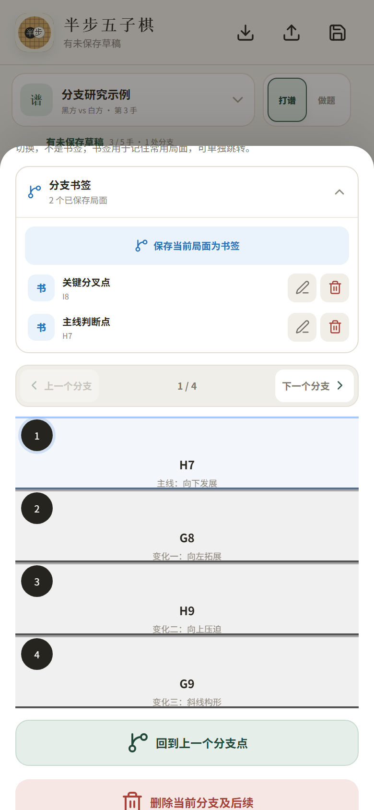

复杂变化看得见，
重要局面还能一键回来
棋谱树负责理解整份变化结构，分支书签负责记住你真正关心的判断点，两者各做各的事。

支持 2×、5×、10× 快速缩放和自由拖动查看。
兄弟变化可上一支、下一支切换，主线单独标识。
保存、重命名和跳转常用局面，不改变原棋谱结构。
可把旋转、镜像也视为相同局面，在棋谱库中查找。
棋谱树负责理解整份变化结构，分支书签负责记住你真正关心的判断点，两者各做各的事。

支持 2×、5×、10× 快速缩放和自由拖动查看。
兄弟变化可上一支、下一支切换，主线单独标识。
保存、重命名和跳转常用局面，不改变原棋谱结构。
可把旋转、镜像也视为相同局面，在棋谱库中查找。